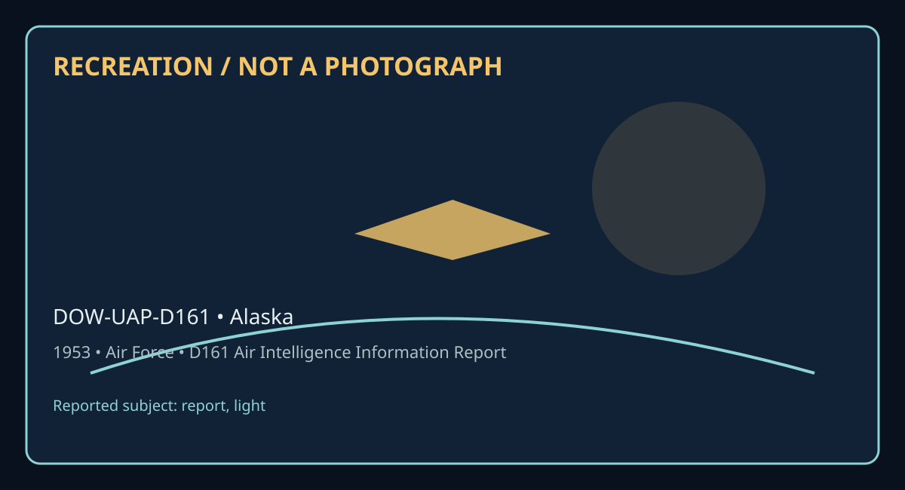

Release 07 / archival case file / DOW-UAP-D161
D161 Air Intelligence Information Report Alaska 1953
This d161 air intelligence information report places a report, light thread in a 1953 Alaska record.
ID: DOW-UAP-D161
Filename:
DOW-UAP-D161-Air_Intelligence_Information_Report_Alaska-1953.pdfDate marker: 1953
Location: Alaska
Agency or collection signal: Air Force
Pages read: 4

RECREATION / NOT A PHOTOGRAPH. The diagram is an interpretive editorial aid, not source imagery.
What this document says
The opening page's extracted text begins: “, • AF FORM 112 • (CLASSIFICATION) • APPROVED I JUNE 1M8 It I R f'.lllM fiivf ,J COUNTRY REPORT NO, ALASKA,- IR 5004-40-53 AIR INTELLIGENCE INFORMATION REPORT SUBJECT Sifhting of Light on Big Diomede, Island, USSR oN IFROM <Agm•r>5004th Air Intel Sv Sq iomede, USSR .A.PO 942, o/o PM, Seattle, Wash. I DATE OF INFORMATION IEVALUATION 8 Ootober 1953 0-3 I SOURCE F M BROWN Ma·or USAF Ralei anna REFERENCES ( CM>lrol numb,r, dlrtcllte, prft>I""' "f>Orl, el<,, a, applleoble) SUMMARY: (Er!Ur fOndlt ,um111ar, ofreporl. Oltle llgnljlccma 111 jl1lal qae-,entrnce paragraph. Lut lnclorurt1 at lower left, Begin ttrt of report on AF Form I /~Fart 11.) At approximately 081015Z, Raleigh Iyapanna, an Eskimo on Little Diomede (168°ss•w- 65°44'N)& observed a light on the southern tip of Big Diomede Island, USSR (169°03'W - 65 47'N). The light appeared as though it oame from a large flashlight or spotlight and lasted for a period of several seconds. The in £orme.tion was reported by I~panna to ROY N. FOWLER member of the 5004th AISS stationed on Little Diomede Island. The sighting is unusual because persons have not been seen previously in that location and because it is believed to be a difficult place to reach, par ticularly at night. o. I • LOO Major, USAF Commander 53 653 LH3RA'RY SUBJECT & AREA CODES Authority: NND 57597 1/ ____ 1NCL5. Sketch of Observation DISTRIBUTION BY ORIGINATOR Comdr, ”
Across the 4 pages, the recurring terms are report, light. Those details belong to this file, not to a generic case template. Page-level reading follows:
- Page 1: , • AF FORM 112 • (CLASSIFICATION) • APPROVED I JUNE 1M8 It I R f'.lllM fiivf ,J COUNTRY REPORT NO, ALASKA,- IR 5004-40-53 AIR INTELLIGENCE INFORMATION REPORT SUBJECT Sifhting of Light on Big Diomede, Island, USSR oN IFROM <Agm•r>5004th Air Intel Sv Sq iomede, USSR .A.PO 942, o/o PM, Seattle, Wash. I DATE OF INFORMATION IEVALUATION 8 Ootober 1953 0-3 I SOURC
- Page 2: ,. AF FORM 112....:PART II APPROVED 1 JUNE 19'8 5>"e vNlfrJ/i//J;O~tJ,t/ Lf AIR INTELUGEN~==ORMATION REPORT FROM (.Aqencv) REPORT HO. 5004th Air Intel Sv Sq APO 942, c/o PM. Seattle. Wash. IR 5004- 40-5.3 PAGE 2 OF 3 PAGES I . DE.SCRIPTIOU OF SOURCE: N'AME: Raleigh Iyapanna AGE: 14 Years OCCUPATION: Elementary Student and Hunter PLACE OF BIRTH: Little Diomed
- Page 3: 1 AF FORM 112-PART II • (~IFICATION) APPROVED I JUNE 19'18 ..:S@ece,..a.1,; r,sa,€1~•-· AIR INTELLIGENCE INFORMATION REPORT FROM (.AQtnCII) lREPORT NO. SOO(th Air Intel Sv Sq APO 94.2. o/o PM. Seattle. Wash IR 5004-40-53 PAGE 3 OF 3 PAGES (16S0 O5' W - 65°37'll) to approxim.a.tely Tin City (l67°68' W - 66°33' N) could be seen when visibility was good. This s
- Page 4: .' ~ • J Cc t1 s ,e c t'F: o &. .... ii,.,. ,, J AF FORM 112-PART II <:: (CUSS!FICATION) APPROVED I JUNE 1948 vA'lUk)) ► J.>Qfobk)PIJII SOit' AIR INTELLIGENCE INFORMATION REPORT FROM (Agrnq) REPORT NO. 5004th Air Intel Sv Sq Incl #1 APO 942, c/o PM, Seat tle, Wash. I R 5004-40-53 PAGE OF P.I.GES r- -t . -t r rr, 0 - - ... 0 ...,.. :&': "' rr, 0 "' 0 - r- 0 "
Historical context and disclosure schema
Read in context, this record belongs to the 1953 information environment: Air Force paperwork, a Alaska setting, and the reporting conventions visible in the source. Its broader disclosure value is procedural as well as anecdotal: it shows how an observation, material question, investigation, or analytical program was routed, described, and preserved. That makes it comparable to other Release 07 records without collapsing unlike evidence into one event.
Evidence limits
The source establishes that this document exists and records what its authors or quoted witnesses wrote. It does not, by itself, prove the identity, performance, origin, or physical reality of the reported subject. Extraction preserves wording but cannot restore missing attachments, authenticate provenance, or independently validate testimony. Interpretations beyond the page-specific record remain hypotheses.
Source: supplied PDF in research/tranche-07. This article is a research aid, not a claim that the reported object was non-human.